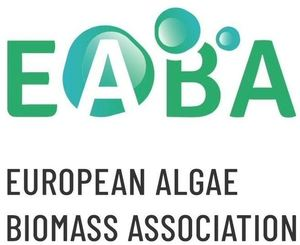

Trade Mark Journal No.2025/012 21 March 2025
WO0000001843109 (35,41,42)
Office of origin: European Union Intellectual Property Office (EUIPO)
Date of International Registration:23 December 2024
Date of designation in the UK:
23 December 2024

The mark contains the colours black, green, blue and white.
International priority date claimed: 28 June 2024
(European Union Intellectual Property Office (EUIPO))
(019047856)
- Class 35
- Commercial administration of the licensing of the goods and services of others; business advice relating to growth financing; arranging and conducting trade shows; promoting and conducting trade shows; organisation of exhibitions and trade fairs for business and promotional purposes; organisation of events for commercial and advertising purposes; arranging and conducting of marketing events; arranging and conducting of promotional events; assistance with business planning; advertising, marketing and promotional services; services with regard to product presentation to the public; business assistance, management and administrative services; advising commercial enterprises in the conduct of their business; market studies; promotion services; marketing; digital marketing.
- Class 41
- Arranging and conducting of conferences, arranging and conducting of seminars, arranging and conducting of congresses, arranging and conducting of workshops, training, arranging and organising exhibitions for cultural or educational purposes; providing of training in the fields of aquaculture, cosmetics, food, agriculture, water management, seaweed production and harvesting, with a view to environmental and food sustainability; transfer of business knowledge and know-how [training]; publication of periodicals, catalogues and prospectuses; publishing services; publication of magazines and books in electronic form, including on the internet; online publication of electronic books and journals; providing of online information relating to education on the internet; production of radio and television programmes; production of audio-visual recordings; recording services; production of video and/or sound recordings; video editing; editing or recording of sounds and images, all the aforesaid services in the areas of aquaculture, cosmetics, food, agriculture, water management, seaweed production and harvesting, with a focus on environmental and food sustainability.
- Class 42
- Product research and development; development of new products; quality control; product quality control testing; product quality evaluation; evaluation of product development; evaluation of product design; product safety testing; analysis and evaluation of product design; testing, analysis and evaluation of the goods and services of others for the purpose of certification; technical research.
EABA European Algae Biomass Association
Representative: Abel Dário Pinto de Oliveira, Rua Nossa Senhora de Fátima, 419, 3º, Frente, P-4050-428 Porto, PORTUGAL